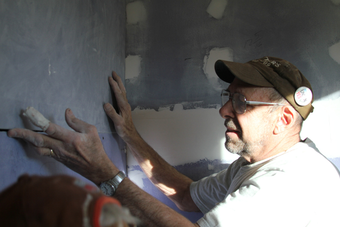
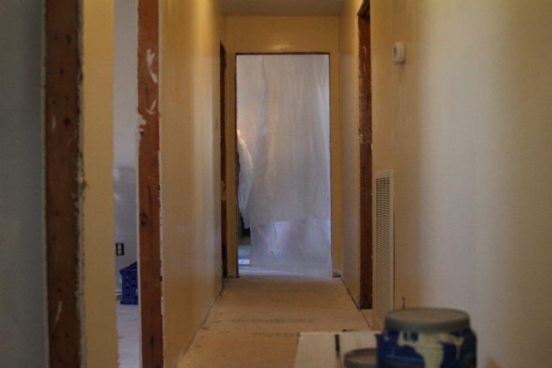
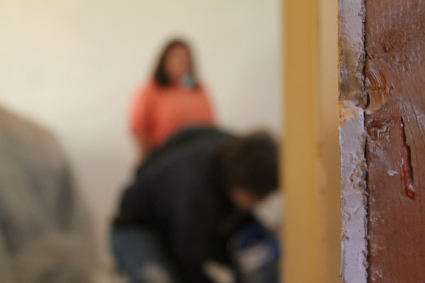

A day in the life of Flood Recovery
"People only see what they are prepared to see." - Ralph Waldo Emerson
Disclaimer: Names of sensitive persons have been changed due to confidentiality. Our names remain the same.
The familiar buzz of the alarm goes off and the twins are gripped with the realization that it is already morning.
How could it possibly be morning already?
Richard slides his hand out from under the covers, puts the alarm in "Sleep" mode and quickly retreats his hand from the cold air.
Surprisingly enough, this air mattress is very comfortable... At least more comfortable than the air out there.
A slight doze fills the minds of the twins, who despise waking up early, especially when the air in Nashville is freezing. It's a blistering 20 degrees outside at 7:30 am.
The alarm goes off again. Richard slowly moves out from the covers. Max fights to stay warm.
"Get up." Richard grumbles.
No response.
"Get UP."
"No." Max moans
"We have to."
"No we don't."
Max eventually rolled out of bed (after Richard ripped the covers off of him). After the morning routine was over and everything was packed, the twins got into their car and turned it on.
But they didn't move.
"I refuse to drive this car when I can't touch the steering wheel. It's too cold." Richard moaned.
"Well, let it run a bit to let the heat going... " Max stated.
The wheel was freezing cold, similar to the weather outside. The boys were in nearly 3 layers of think clothing and they were still not comfortable. The weather is Nashville this morning was miserable.
"I'm putting gloves on." Richard said as he reached in his pocket for gloves to touch the steering wheel.
"Good. We'll be late otherwise."
And they were off. The night before, they had met with two people who gave them very important information. The first person was Adora, their contact at the Church they were sleeping in. She said that she knew a few people who would be willing to speak with them about their experience with the flooding in Nashville. We'll call her "Abby." They had received Abby's phone number but had not tried her number yet. They figured they would give Abby a call after they had woken up a bit more.
The other person they had met was Jason, who was a volunteer coordinator for the Disaster Recovery Project. He informed them of where a group of volunteers would be working while the boys were here: Franklin, TN (a town south of Nashville). He also told them of an important weekly meeting he would be attending that morning in Cheatam County in Ashland City, TN (West of Nashvile). It was a meeting to discuss the unmet needs of community members in Cheatam County. They would be meeting at a bank. The twins could not miss this opportunity.
They arrived in Ashland City a few minutes before the meeting started. It was still freezing. They decided to keep the car on and call Abby to set up an appointment to speak with her.
No dice. The phone call went straight to Voicemail and was clearly a cell phone. A message was left for Abby.
The twins walked into the meeting room and they were introduced to the facilitator of the meeting, John, who is a major voice and donor in Ashland City. John was excited to speak with the twins, but only after the meeting concluded.
We have to sit through this entire meeting? Without anything to do?
The committee for Unmet Needs would discuss important matters, John reassured. They would decide how to allocate money to the citizens who had spent their federal money from FEMA.
John had soon finished his description of the criteria when the rest of the committee members walked through the door. Jason was among them.
Pleasantries were exchanged, the twins were introduced and the meeting got down to business. They were discussing if they would allocate funds for a lady, "Sue", who had spent nearly all of her FEMA funds. She owned her own business and her own home. Both of which were barely standing after the flood hit.
Sue was starting from scratch, not only with her home but with her business. She needed help from the committee to rebuild both buildings to the way they were before the flood. After much discussion and deliberation, the committee decided that they would give additional support to her.
These decisions are tough... life-altering even.
The meeting, after more talking points, concluded. The twins spoke with a few members of the committee and exchanged contact information before they left. John, the facilitator, gave his interview to the boys. He owned his own business in Ashland City and did not do social work for a living. He was just a concerned neighbor.
The interview was finished and the boys received a phone call. It was Adora. She had tracked down another person who was affected from the flood who would be willing to talk to us, "Betty." She gave us a phone number for Betty and the boys called her. No response. They left a message.
Not two minutes had gone by and Betty called back. They agreed to meet tomorrow morning at 7:30 am.
7:30 in the morning? There goes any chance of sleep this week...
Lunch was had at a local Italian restaurant.
"So we're meeting Betty tomorrow morning?" Max inquired.
"Yup." Richard replied, busy with his salad.
"Any response from Abby?" Max asked.
"Nope."
"And we're going to the work site after lunch?"
"Yes."
"Isn't it like an hour away from here?"
"Uh-huh."
A silence occurs.
Lunch wrapped up and the boys got in the car. While on the way to Franklin, they passed by the Cumberland river, which meanders back and forth in Middle Tennessee.
That's the river that flooded... The one that destroyed homes...
Flash forward to Franklin, TN. The boys drive through the town.
This is a very nice area of Tennessee.
It was. Strip malls, commercial areas, and two-story homes lined the roads they were driving on. Their GPS took them down to a subdivision.
This area was hit by the flood?
They find the house where the volunteers are working. The group is made up of middle aged adults who have taken a week off of their jobs to work in a home that needs repair. After an introduction to the group, the boys had a chance to speak with "Vicky" the resident. Vicky told them that they could film all the volunteers they wanted, but she was not comfortable being on camera.

"You know, I've never done anything like this before." Vicky said.
"Done anything like what before?" Max inquired.
"Ask for help from anyone." Her and her husband were highly independent. They were not on any sort of welfare before the flood hit.
"After the rain came," Vicky continued, "the water just stayed in this area for days. It nearly took out all of the foundation. The only thing left after the water drained was the floor pegs and a thin layer of wooden floor."
She had requested funds for recovery and construction from volunteers started a month ago. Already, great strides were seen.
"It's all volunteer man power. And they have given us a chance to have our home back. Everything you see her was put in by volunteers, save for the HVAC. We haven't had to leave our property once."

We began filming. The volunteers were wonders to work with. We made sure we got out of their way when they came through. The group their had made a tradition out of traveling to a work site together. A group of church members from Ohio, Michigan, and Pennsylvania, had decided that they should travel to sites where they could help out others. This year, they decided they should work in Nashville to help the recovery effort there.

Phone rings. It's Abby.
Thank God.
She can meet the boys Wednesday at noon.
Perfect.
The twins wrap up filming at the work site as the workers start to clean. They say their goodbyes and promise that they will be in and out throughout the rest of the week.
Can't wait to see how this looks once they're done.


Reader Comments
1 commentsFrom: Lauren, 12/08/10 12:16 PM
Stay warm!!!